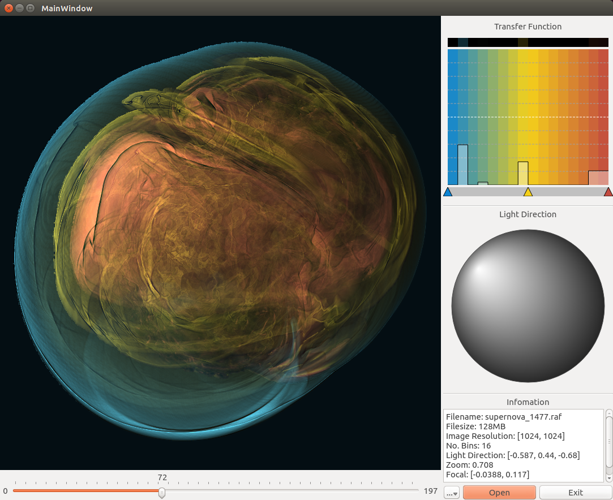

Parallel numerical simulation is a powerful tool used by scientists to study complex problems. It has been a common practice to save the simulation output to disk and then conduct post-hoc in-depth analyses of the saved data. System I/O capabilities have not kept pace as simulations have scaled up over time, so a common approach has been to output only subsets of the data to reduce I/O. However, as we are entering the era of peta- and exa-scale computing, this sub-sampling approach is no longer acceptable because too much valuable information is lost. In situ visualization has been shown a promising approach to the data problem at extreme-scale. We present a novel in situ solution using depth maps to enable post-hoc image-based visualization and feature extraction and tracking. An interactive interface is provided to allow for fine-tuning the generation of depth maps during the course of a simulation run to better capture the features of interest. We use several applications including one actual simulation run on a Cray XE6 supercomputer to demonstrate the effectiveness of our approach.
The XImage library for vector field pathtube visualization: https://chrisyeshi.github.io/ximage-vector
Blog
A blog like report page was written to remember what has done to this project. Everything about the project, such as design decisions, authur's frustrations, bad images, and good images can be found in the blog. The blog can be found here: http://chrisyeshi.github.io/ximage-scalar/blog/
Obtaining the Codes
You can download the archived codes from the top right of this page, or you can clone the repository in the GitHub page. The commands I use to clone the repository is:
$ cd /where/you/want/to/put/this/code/
$ git clone https://github.com/chrisyeshi/ximage-scalar.git --single-branchAnd of course you can use Git management softwares, the one I prefer is SourceTree. I have never tried the GitHub application, but I assume it is pretty good.
Prerequisites
Most third party libraries are already included in the source code, including boost/smart_ptr and jsoncpp. We extract the smart pointer module from the huge boost library, so we are able to include a small portion of the boost library into the source code. The jsoncpp library contains only a header file and a source file, which is also very small.
The only third party library we need is Qt5. It is used only for the interface of the viewer. As a result, if you are not building the viewer, you don't need to have Qt5. Qt5 can be obtained here: http://qt-project.org/
Installation
We use the best building system provided by CMake. It's a modern, elegant, and famous buliding system which is light years better than automake. If you have never heard of CMake, you should definitely check out their website: http://www.cmake.org/
The commands I use to build is:
$ cd /the/root/directory/of/ximage-scalar/
$ mkdir build
$ cd build
$ cmake ..
$ make
$ make installInstead of cmake .. we can also use ccmake .. which provides a command line interface for us to specify the build options. Here are the build options that are worth mentioning:
| BUILD_HPGV | ON/OFF | Whether to build HPGV library, which is the main module. |
| BUILD_TESTS | ON/OFF | Whether to build the test suite. |
| BUILD_VIEWER | ON/OFF | Whether to build the viewer of explorable images. |
| CMAKE_BUILD_TYPE | Release/Debug | Choose from release or debug build. Choose release for performance. |
| CMAKE_INSTALL_PREFIX | /path/you/prefer/ | make install will store the neccessary files in this path. |
Using HPGV
The purpose of HPGV is to allow users to integrate into a simulation and perform in situ visualization. However, we also provide an executable that can render HDF5 volumetric datasets.
The executable is called h5ren, there is also a helper bash script called h5renpar.sh for parallel rendering using MPI. After make install they are under the /your/install/path/bin/ directory. The arguments for h5ren and h5renpar.sh are
$ ./h5ren [X] [Y] [Z] [CONFIG] [HDF5] [DATASET] [OUTPUT]
$ ./h5renpar.sh [X] [Y] [Z] [CONFIG] [HDF5] [DATASET] [OUTPUT]where [X] [Y] [Z] specifies how many processors you want to use for parallel rendering. If using h5ren, 1 1 1 is the only option. [CONFIG] is a configuration file, which specifies how we want to render the volume. We will show the format of the file below. [HDF5] is the HDF5 volumetric file you want to render. [DATASET] is the specific dataset in the HDF5 file. [OUTPUT] is the name of the output file you prefer. Leave it without extension and the system will append .raf for ray attenuation function.
The h5ren also acts as a demo of how to integrate HPGV into a simulation. The following code snippet shows how to integrate with a simulation.
// These are the include files the library needs.
#include "hpgvis.h"
#include "parameter.h"
...
// Setting up the parameter object.
// "configure.json" is the configuration file used in this particular example, change to whatever file name you are using.
// You can also setup the parameter object using codes, please refer to parameter.h and the sample configuration file below on what needs to be set.
hpgv::Parameter para;
if (!para.open("configure.json"))
return false;
HPGVis vis;
vis.initialize();
vis.setProcDims(npx, npy, npz);
vis.setParameter(para);
vis.setVolume(volume);
vis.render();
if (rank == vis.getRoot())
vis.getImage()->save("output.raf");Upon this point, we haven't talked about the configuration file, which is essential because it directly determines the output image quality. The following json snippets shows the format of the configuration file.
{
// format has to be RAF (Ray Attenuation Function) at the moment
"format" : "RAF",
// type is the floating number type, use float or double
"type" : "float",
// Specifies the data range. If "minmax" is not provided, the system will calculate it automatically.
"minmax" : [0.0, 0.1],
"images" : [
{
// Adaptive binning is specified here:
// It's an array of 17 floating point numbers, the first number is always 0.0, and the last number is always 1.0.
// If "binTicks" is not provided, the system will use a linear spaced array.
"binTicks" : [0.0, 0.25, 0.5, 0.625, 0.65626,
0.6875, 0.71875, 0.75, 0.765625,
0.78125, 0.796875, 0.8125, 0.8281,
0.84375, 0.859375, 0.875, 1.0],
// "sampleSpacing" determines how fast the rays move forward.
"sampleSpacing" : 0.5
}
],
"view" : {
// These determines the resolution of the output image. Usually the last two number of "viewport" are the same as "width" and "height".
"viewport" : [ 0, 0, 1024, 1024 ],
"width" : 1024,
"height" : 1024,
"angle" : 0,
"scale" : 0,
// The model, view, and projection matrix to specify the camera orientation.
"modelview" : [
-0.5036, 0.6476, -0.5717, 128.3415,
0.5741, -0.2436, -0.7816, 135.3691,
-0.6455, -0.7219, -0.2491, -415.0219,
0, 0, 0, 1
],
"projection" : [
2.823912858963013, 0, 0, 0,
0, 2.823912858963013, 0, 0,
0, 0, -1.649572372436523, -939.01904296875,
0, 0, -1, 0
]
}
}Using HPGView
The image shown above is the interface of the HPGView. The main section on the top left shows the final rendering result. We support zoom and pan using the mouse wheel and left button.
On the bottom left, it is a slider for exploring the temporal dimension. The three numbers (0, 72, 197) are representing the (starting frame, current frame, end frame). Users can drag to any frame or use keyboard left/right arrow key to traverse the time.
On the top right, it's the control panel. From the top to bottom, they are transfer function editor, lighting editor, and generate information display. With transfer function, users can determine the colors and transparency of the different layers in explorable image. With the lighting editor, users can change the light direction by dragging the bright region of the sphere. The information panel shows the general information about the file, including file name, file size, image resolution, light direction, zoom level, and focal point.
Finally the bottom right has 3 buttons, from left to right, advanced settings, open button, and the exit button. The advanced settings is too advanced to be written down here. The open button is to open different files, and the exit button is ...
Authors and Contributors
Chris Ye (@chrisyeshi), Yang Wang (@gnavvy), Bob Miller (@dairukan), and Kwan-Liu Ma (@)
Support or Contact
Contact Chris Ye (@chrisyeshi) (chrisyeshi@gmail.com) if you have any questions.